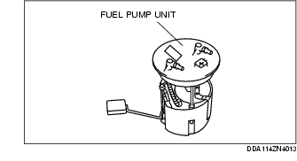
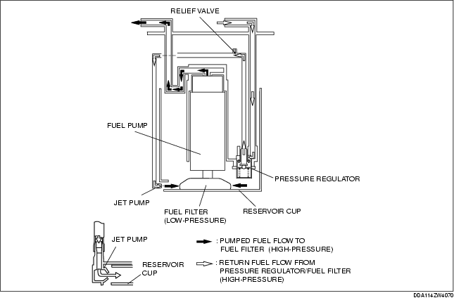

Fuel pump unit construction/operation [ZY]

Fuel Pump Unit
• Mainly consists of a pressure regulator, fuel pump, fuel reserve cup, and fuel filter (low-pressure).
• A pressure regulator is built-in due to the adoption of a returnless fuel system.
• Fuel in the fuel reserve cup is suctioned out through the fuel filter (low-pressure) by the fuel pump, and pumped to the fuel filter (high-pressure). Return fuel regulated by the pressure regulator is sent back to the fuel reserve cup through the return hose, and the jet pump.
• Fuel is supplied to the fuel reserve cup by sending back return fuel to the fuel reserve cup through the jet pump.
Pressure Regulator
• Built into the fuel pump unit due to adoption of a returnless fuel system.
• Mainly consists of a spring, relief valve and diaphragm.
• Pressurizes fuel discharged by the fuel pump to approx. 390 kPa {3.98 kgf/cm2, 56.6 psi} using the spring, diaphragm and release valve, and then pumps it to the fuel distributor.
• If fuel pressure exceeds approx. 390 kPa {3.98 kgf/cm2, 56.6 psi}, the release valve opens to discharge unnecessary fuel pressure.
